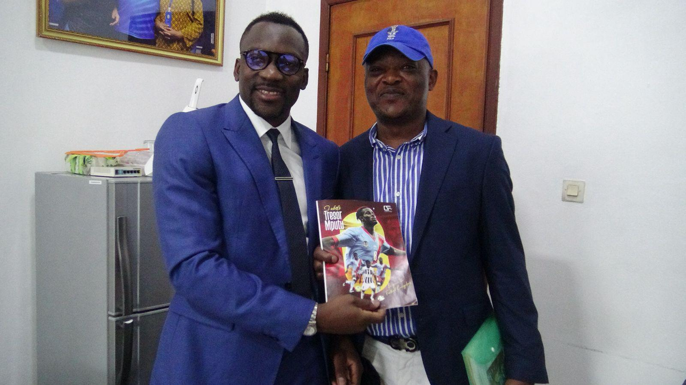

À propos
Chris Business facilite les affaires en RDC. Chrisfoot, agence agréée FIFA, accompagne les footballeurs congolais à l'international.
Notre vision
Chris Business & Chrisfoot sont nées d'une conviction : la République Démocratique du Congo, déjà au cœur de l'Afrique, a tout pour devenir un point de départ vers le continent et le monde. À travers deux structures complémentaires — Chris Business pour la facilitation d'affaires, Chrisfoot pour l'accompagnement des footballeurs congolais à l'international — nous mettons notre réseau au service d'un même objectif : ouvrir la RDC aux opportunités économiques et sportives internationales, tout en soutenant son développement social à travers des partenariats avec les institutions publiques et les fondations locales.
L'équipe

Notre mission
En RDC, en particulier dans le secteur de la santé.
Transfert et accompagnement de joueurs congolais.
Pourquoi la RDC
Déjà située au point central de l'Afrique, la RDC peut devenir votre siège pour conquérir le continent.
Questions fréquentes